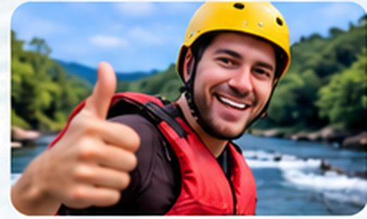
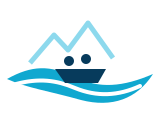
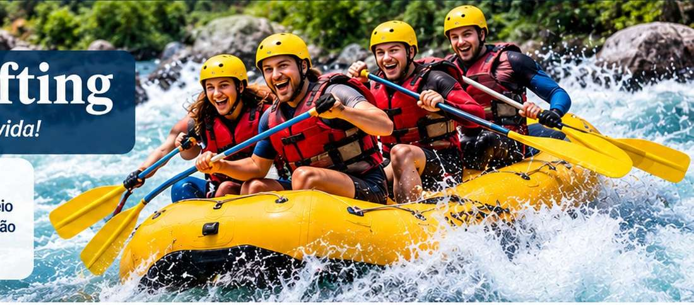
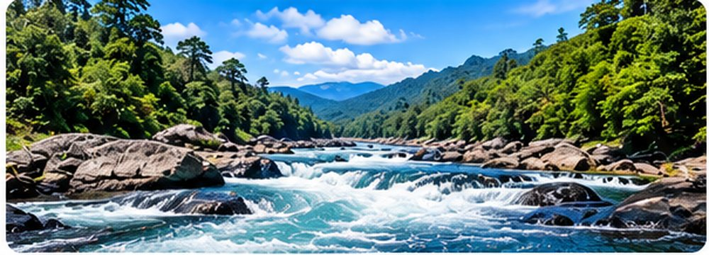

Nossa missão
Proporcionar experiências inesquecíveis em meio à natureza, com segurança, diversão e respeito ao meio ambiente. Cada descida é uma oportunidade de superar limites e criar boas lembranças!

White Water Rafting
A emoção das corredeiras, a aventura da vida!

Proporcionar experiências inesquecíveis em meio à natureza, com segurança, diversão e respeito ao meio ambiente. Cada descida é uma oportunidade de superar limites e criar boas lembranças!
A White Water Rafting nasceu da paixão por aventuras e pelo contato com a natureza. Fundada em 2010 por um pequeno grupo de amigos, a empresa começou com o sonho de compartilhar a emoção das corredeiras com mais pessoas. Com o passar dos anos, reunimos uma equipe de instrutores apaixonados e comprometidos com a segurança. Hoje, nossa missão continua a mesma: oferecer experiências emocionantes, acolhedoras e responsáveis para aventureiros de todos os níveis.
